التحيز الخوارزمي يضخم استقطاب الآراء: نموذج ثقة محدودة
Alina Sîrbu1,2, Dino Pedreschi1, Fosca Giannotti3, János Kertész4,5,
1 Department of Computer Science, University of Pisa, Pisa, Italy
2 Science Division, New York University Abu Dhabi, Abu Dhabi, United Arab Emirates
3 Istituto di Scienza e Tecnologie dell’Informazione “A. Faedo” - CNR, Pisa, Italy
4 Center for Network Science, Central European University, Budapest H-1051, Hungary
5 Department of Theoretical Physics, Budapest University of Technology and Economics, Budapest H-1111, Hungary
* alina.sirbu@unipi.it
الملخص
إن تدفق المعلومات التي تصل إلينا عبر منصات الإعلام على الإنترنت لا يجري تحسينه وفقا لمحتوى المعلومات أو صلتها بالموضوع، بل وفقا للشعبية والقرب من الهدف. ويجري ذلك عادة بغرض تعظيم استخدام المنصة. وكنتيجة جانبية، يفضي هذا إلى تحيز خوارزمي يعتقد أنه يعزز استقطاب النقاش المجتمعي. ولدراسة هذه الظاهرة، نعدل النموذج المعروف لديناميات الرأي المستمرة ذي الثقة المحدودة لكي يأخذ التحيز الخوارزمي في الحسبان ونبحث آثاره. في أبسط نسخة من النموذج الأصلي، تختار أزواج المشاركين في النقاش عشوائيا وتقترب آراؤهم بعضها من بعض إذا كانت ضمن مستوى تحمل ثابت. ونعدل قاعدة اختيار شركاء النقاش: إذ توجد احتمالية معززة لاختيار الأفراد الذين تكون آراؤهم متقاربة أصلا، وبذلك نحاكي سلوك وسائل الإعلام على الإنترنت التي تقترح التفاعل مع أقران مشابهين. ونتيجة لذلك نلاحظ: أ) ميلا متزايدا إلى الاستقطاب، يظهر أيضا في شروط كان النموذج الأصلي سيتنبأ فيها بالتقارب، وب) تباطؤا شديدا في السرعة التي يبلغ بها التقارب الحالة التقاربية، مما يجعل النظام شديد عدم الاستقرار. ويزداد الاستقطاب بفعل تجزؤ السكان الابتدائي.
1 المقدمة
يمثل الاستقطاب السياسي اتجاها سلبيا عاما ومتعاظما في المجتمعات الغربية الحديثة [1, 2, 21, 22]، تقترن به ظواهر مثل “الوقائع البديلة” و“فقاعات الترشيح” و“غرف الصدى” و“الأخبار الزائفة”. وقد حددت عدة أسباب لذلك (انظر، على سبيل المثال، [3])، غير أن هناك أدلة متزايدة على أن الإعلام الجديد على الإنترنت واحد منها [4, 5, 6]. وكان يفترض سابقا أن وسائل الإعلام الجماهيري التقليدية تؤثر في الغالب في النخبة السياسية النشطة في المجتمع، وأنها لا تؤثر في استقطاب السكان ككل إلا بصورة غير مباشرة. أما التحولات الدرامية الأخيرة مع ظهور الإعلام على الإنترنت، وانتشار الإنترنت في كل مكان بما يتيحه من معلومات في متناول نقرات قليلة، والاستخدام العام للشبكات الاجتماعية على الإنترنت، فقد زادت عدد قنوات الاتصال التي يمكن أن تصل عبرها المعلومات السياسية إلى المواطنين. وعلى نحو غير بديهي إلى حد ما، لم يؤد ذلك إلى اكتساب أكثر توازنا للمعلومات ولا إلى ميل أقوى نحو التوافق، كما نوقش في [7]؛ بل حدث العكس. وقد يكون أحد الأسباب أن الإعلام الجديد عزز قابلية الوصول إلى الناس، وهو ما يمكن استخدامه لنقل إجابات سياسية مبسطة عن أسئلة معقدة، ومن ثم يعمل باتجاه الاستقطاب [8]. علاوة على ذلك، لا ينظم تدفق الأخبار في الإعلام الجديد بطريقة متوازنة، بل تنظمه خوارزميات مبنية لتعظيم استخدام المنصة. ويفترض أن هذا يولد “تحيزا خوارزميا” يعزز اصطناعيا استقطاب الآراء. وهذا من مصنوعات المنصات الإلكترونية، ويسمى أيضا ”العزل الخوارزمي” [9]. ولم تثبت حتى الآن الصلة بين استقطاب الآراء والتحيز الخوارزمي الصادر عن المنصات الإلكترونية، لذلك يهدف هذا البحث إلى دراسة هذا الأثر بواسطة نموذج بسيط لديناميات الرأي من نوع الثقة المحدودة.
إن جزءا كبيرا ومتزايدا بسرعة من السكان لا يستخدم وسائل الإعلام التقليدية (الصحافة المطبوعة أو الراديو أو التلفاز أو حتى المجلات الإلكترونية) للحصول على الأخبار [10, 11, 12]، بل يتجه إلى الإعلام الجديد مثل الشبكات الاجتماعية على الإنترنت أو المدونات. غير أن تدفق الأخبار في الإعلام الجديد لا ينتقى على أساس القيمة المعلوماتية، بل بالأحرى على أساس الشعبية، وبواسطة ”الإعجابات” [13]. ولما كان الناس يميلون إلى تعريف أنفسهم بآراء تشبه آراءهم، ويرجح أن يعجبوا بالأخبار الموافقة لها بدرجة أعلى، فإن من مصلحة مزودي الخدمة أن يوجهوا المعلومات سلفا بطريقة مستهدفة. وهذا يعني أن المستخدمين لا يواجهون حتى سرديات مختلفة عن سردياتهم المفضلة. وتبذل جهود كبيرة لتطوير خوارزميات فعالة للتوجيه الملائم للأخبار من أجل توفير التدفق الأرجح لجمع أكبر عدد ممكن من الإعجابات.
وثمة عامل مهم آخر يسير في الاتجاه نفسه يتعلق بوظيفة ”المشاركة”، المسؤولة بدرجة كبيرة عن الانتشار السريع للأخبار ومن ثم تعزيز شعبيتها. ويحدث هذا الانتشار على الشبكة الاجتماعية، حيث تتشكل الروابط غالبا نتيجة للتجانس في الميول؛ أي إن تبادل المعلومات يقع بين أشخاص ذوي آراء متشابهة. وقد يسهم تنوع تفاعلات الشخص (العائلة، المدرسة، العمل، الهواية، إلخ) في تنويع مصادر المعلومات [14]، ومع ذلك يبدو أن التجانس في ما يخص الآراء السياسية قوي على نحو خاص [15]. وقد تبين أيضا أن المشاركة بين مستخدمين ذوي معتقدات متشابهة صحيحة في سياق انتشار المعلومات المضللة على Facebook، مما يؤدي إلى أثر غرفة الصدى [20]، وكذلك على Twitter، حيث ثبت أن للمستخدمين الحزبيين دورا مهما في الاستقطاب [24].
من الواضح أن آثار الشبكات مهمة جدا في انتشار الأخبار والآراء، إلا أننا في دراستنا الحالية سنتجاهل بنية الشبكة في النظام وسنركز حصرا على تبعات التحيز الخوارزمي في اختيار المحتوى المعروض على المستخدمين. وهذا يقابل مقاربة المجال المتوسط، وهي مستخدمة على نطاق واسع بوصفها تقريبا أوليا لمسائل الانتشار [16].
لذلك تتمثل المهمة في نمذجة تطور موقف المجتمع، بفرض وجود تحيز في اختيار الشركاء الذين تتواجه آراؤهم. شهدت السنوات الأخيرة إدخال عدة نماذج لديناميات الرأي [19]، غير أن أيا منها لا يتضمن التحيز الخوارزمي بالمعنى الموصوف هنا. ومن ثم نقدم امتدادا لأحد النماذج القائمة لدراسة هذا الأثر. ولغرض التبسيط نستخدم نموذج ديناميات رأي ذا ثقة محدودة [17]، وهو معروف بقدرته على وصف كل من توافق الآراء واستقطابها تبعا لمستوى تحمل الوكلاء. في نسخة المجال المتوسط، يختار وكيلان عشوائيا وتقترب آراؤهما، الممثلة بأعداد حقيقية، إذا كانا ضمن مستوى التحمل. ويدخل التحيز بحيث تؤخذ آراؤهما في الاعتبار منذ مرحلة اختيار الشركاء، فتختار الوكلاء ذوو الآراء الأقرب باحتمال أعلى. وبهذا التعديل البسيط نرى أثرين. أولا، يعاق الميل نحو التوافق، أي يلزم مستوى تحمل أكبر لتحقيق التوافق؛ وثانيا، يتباطأ الاقتراب من الحالة التقاربية تباطؤا هائلا. لذلك يؤثر تحيز الاختيار في عملية تشكل الرأي بطريقتين عميقتين: أ) بتفاقم الاستقطاب، الذي يظهر أيضا في شروط كان النموذج الأصلي سيتنبأ فيها بالتوافق، وب) بإبطاء عملية الانتشار، مما يجعل النظام شديد عدم الاستقرار.
تنظم الورقة على النحو الآتي. في القسم التالي نقدم النموذج بالتفصيل. ويتضمن قسم النتائج نتائج المحاكاة. ونختتم الورقة بمناقشة وعرض للبحث اللاحق.
2 النموذج
ينظر نموذج الثقة المحدودة الأصلي [17] في جماعة مكونة من  أفراد، حيث يحمل كل فرد
أفراد، حيث يحمل كل فرد  رأيا مستمرا
رأيا مستمرا
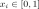
. ويمكن اعتبار هذا الرأي الدرجة التي يوافق بها الفرد أو لا يوافق على موقف معين. ويرتبط الأفراد بشبكة اجتماعية كاملة، ويتفاعلون ثنائيا في خطوات زمنية متقطعة. ويختار الزوج المتفاعل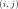
عشوائيا من السكان عند كل نقطة زمنية . وبعد التفاعل قد يتغير الرأيان،
. وبعد التفاعل قد يتغير الرأيان،  و
و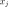
، تبعا لما يسمى معامل الثقة المحدودة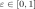
. ويمكن أن ينظر إلى ذلك بوصفه مقياسا لانفتاح الأفراد الذهني في جماعة سكانية. فهو يعرف عتبة على المسافة بين رأيي الفردين، لا يكون التواصل بين الأفراد بعدها ممكنا بسبب تعارض وجهات النظر.إذا عرفنا المسافة بين رأيين  و
و على أنها
، فإن المعلومات لا تتبادل بين الفردين إلا إذا كان ، وإلا فلا يحدث شيء. وينتج تبادل المعلومات في اقتراب الرأيين أحدهما من الآخر، منظما بمعامل تقارب
على أنها
، فإن المعلومات لا تتبادل بين الفردين إلا إذا كان ، وإلا فلا يحدث شيء. وينتج تبادل المعلومات في اقتراب الرأيين أحدهما من الآخر، منظما بمعامل تقارب
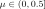
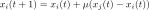 |
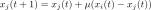 |
في ما يلي لا ننظر إلا في حالة
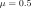
، أي عندما يأخذ كلا الفردين الرأي المتوسط.لإدخال التحيز الخوارزمي في التفاعل بين الأفراد، نعدل الإجراء الذي يختار به الزوج
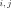
. في النموذج الأصلي، يختار و
و عشوائيا وبانتظام من السكان. وبدلا من ذلك، يجعل التحيز الخوارزمي لقاءات الأفراد المتشابهين أكثر احتمالا. ولأخذ ذلك في الحسبان، نختار أولا
عشوائيا وبانتظام من السكان. وبدلا من ذلك، يجعل التحيز الخوارزمي لقاءات الأفراد المتشابهين أكثر احتمالا. ولأخذ ذلك في الحسبان، نختار أولا  ، ثم يجرى اختيار
، ثم يجرى اختيار  باحتمال يعتمد على
باحتمال يعتمد على  :
:
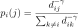 |
(1) |
وبهذه الطريقة، يكون احتمال اختيار  بعد اختيار
بعد اختيار  أكبر إذا كان أصغر، أي إن الأفراد المتشابهين يتفاعلون أكثر. وتمثل المعلمة
أكبر إذا كان أصغر، أي إن الأفراد المتشابهين يتفاعلون أكثر. وتمثل المعلمة  شدة التحيز الخوارزمي: فكلما كبرت
شدة التحيز الخوارزمي: فكلما كبرت  ، أصبحت اللقاءات بين أفراد ذوي آراء متباعدة أندر. وعند
، أصبحت اللقاءات بين أفراد ذوي آراء متباعدة أندر. وعند  نحصل على نموذج الثقة المحدودة الأصلي، .
نحصل على نموذج الثقة المحدودة الأصلي، .
 ، هو
، هو  . لذلك إذا كان
. لذلك إذا كان 3 النتائج
من أجل فهم كيف يؤثر إدخال التحيز الخوارزمي في أداء النموذج، ندرس النموذج وفق معايير متعددة لتوليفات مختلفة من المعلمتين  و
و . ونهتم بما إذا كانت الجماعة السكانية تتقارب إلى توافق أم إلى عناقيد رأي متعددة (القسم 3.1)، وبمدى سرعة ظهور التقارب (القسم 3.2). ولهذا نركز على الانتقال بين عنقود واحد وعنقودين. وننظر أيضا في تأثير حجم السكان في السلوك المرصود، سواء في النموذج الأصلي أم في النموذج الموسع (القسم 3.3). وعلاوة على ذلك، يدرس أثر جماعة ابتدائية مفروزة (القسم 3.4). وفي كل تحليل نكرر المحاكاة مرات متعددة لأخذ الطبيعة العشوائية للنموذج في الحسبان، ونعرض القيم المتوسطة التي حصلنا عليها لكل معيار من المعايير أعلاه.
. ونهتم بما إذا كانت الجماعة السكانية تتقارب إلى توافق أم إلى عناقيد رأي متعددة (القسم 3.1)، وبمدى سرعة ظهور التقارب (القسم 3.2). ولهذا نركز على الانتقال بين عنقود واحد وعنقودين. وننظر أيضا في تأثير حجم السكان في السلوك المرصود، سواء في النموذج الأصلي أم في النموذج الموسع (القسم 3.3). وعلاوة على ذلك، يدرس أثر جماعة ابتدائية مفروزة (القسم 3.4). وفي كل تحليل نكرر المحاكاة مرات متعددة لأخذ الطبيعة العشوائية للنموذج في الحسبان، ونعرض القيم المتوسطة التي حصلنا عليها لكل معيار من المعايير أعلاه.
3.1 التوافق مقابل تجزؤ الآراء
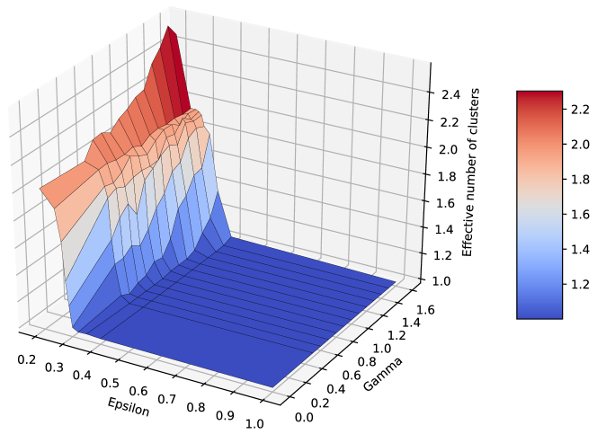
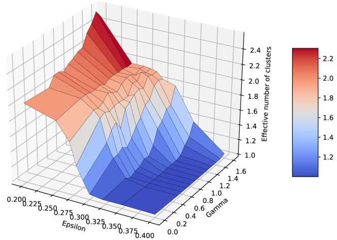
 و
و . تعرض اللوحة العلوية الفضاء من أجل
. تعرض اللوحة العلوية الفضاء من أجل 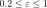
، في حين تكبر اللوحة السفلية المنطقة التي يكون فيها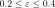
. وقد حسبت القيم متوسطا على 85 تشغيلات.يتحدد سلوك نموذج الثقة المحدودة الأصلي بالمعلمة  [17]. وعندما تكون هذه المعلمة كبيرة بما يكفي، تتقارب جماعة ابتدائية عشوائية منتظمة إلى توافق، في حين تظهر عناقيد في السكان مع انخفاض
[17]. وعندما تكون هذه المعلمة كبيرة بما يكفي، تتقارب جماعة ابتدائية عشوائية منتظمة إلى توافق، في حين تظهر عناقيد في السكان مع انخفاض  . وقد تبين أن عدد العناقيد الرئيسة يمكن تقريبه بـ
. وقد تبين أن عدد العناقيد الرئيسة يمكن تقريبه بـ
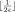
. ويتجاهل هذا التقريب العناقيد الثانوية التي قد تظهر في بعض الحالات [18].في ما يلي نحلل عدد العناقيد المحصلة في نموذجنا الموسع، ابتداء من توزيع ابتدائي منتظم للآراء، لجماعة سكانية حجمها
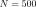
. ونركز على المنطقة في فضاء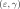
التي يكون فيها، في النموذج الأصلي، عدد العناقيد أصغر من أو يساوي 2، أي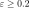
. ولقياس عدد العناقيد كميا، مع وجود عناقيد رئيسة وثانوية، نستخدم نسبة مشاركة العناقيد معيارا. ولا يأخذ هذا المعيار في الحسبان عدد العناقيد فحسب، بل أيضا كسر السكان في كل عنقود، وبذلك يقيس العدد الفعال للعناقيد. ومن ثم فإن عنقودين متساويين تماما سيؤديان إلى نسبة مشاركة عناقيد قدرها ، أما إذا كان أحد العناقيد أكبر فستأخذ القيمة قياسا في
، أما إذا كان أحد العناقيد أكبر فستأخذ القيمة قياسا في 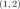
. ولذلك يحسب العدد الفعال للعناقيد المقيس في هذا القسم على النحو الآتي: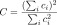 |
(2) |
حيث إن
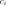
هو حجم العنقود .
.
يعرض الشكل 1 العدد الفعال للعناقيد لقيم مختلفة من  و
و ، باستخدام متوسطات على تشغيلات متعددة. وتعرض اللوحة العلوية النتائج لـ
، باستخدام متوسطات على تشغيلات متعددة. وتعرض اللوحة العلوية النتائج لـ بين
بين
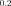
و ، في حين تكبر اللوحة السفلية المنطقة التي تقع فيها
، في حين تكبر اللوحة السفلية المنطقة التي تقع فيها  بين
بين  و
و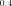
. لاحظ أنه في هذه المحاكاة تتقارب الجماعة إلى عنقود رئيس واحد أو عنقودين أو ثلاثة عناقيد رئيسة ذات كتل متشابهة، إضافة إلى بعض العناقيد الثانوية المهملة. وبالنسبة إلى إعداد المعلمات نفسه، قد تتقارب الجماعة إلى عنقود واحد في بعض المحاكاة، أو إلى عنقودين في محاكاة أخرى. ونعرض القيم المتوسطة كما حصلنا عليها من 85 تشغيلات مستقلة.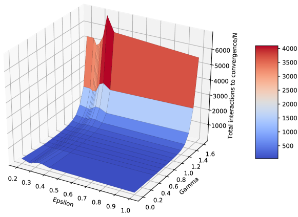
يبين الرسم أن محاكاتنا تعيد إنتاج سلوك النموذج الأصلي تماما ( )، حيث يحدث انتقال بين عنقود 2 وعناقيد 1
عند
)، حيث يحدث انتقال بين عنقود 2 وعناقيد 1
عند
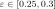
. ومن الواضح أن إدخال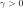
يسبب زيادة في العدد الفعال للعناقيد، مقارنة بالنموذج الأصلي. فعلى سبيل المثال، عند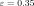
، يؤدي النموذج الأصلي إلى عنقود واحد، في حين تبدأ عناقيد جديدة في نموذجنا بالظهور عند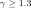
. وعند ، يبدأ الانتقال حتى في وقت أبكر قبل
، يبدأ الانتقال حتى في وقت أبكر قبل 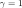
، مع عدد متوسط للعناقيد قريب جدا من 2 عند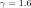
. أما في حالة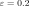
، حين كان عدد العناقيد الأصلي بالفعل 2، فإن يزيد
يزيد
 باتجاه 3 عناقيد رأي. ومن ثم يبدو من محاكاتنا أن التحيز الخوارزمي يسبب التجزؤ في نموذج الثقة المحدودة، من خلال زيادة عدد العناقيد
مع ازدياد التحيز.
باتجاه 3 عناقيد رأي. ومن ثم يبدو من محاكاتنا أن التحيز الخوارزمي يسبب التجزؤ في نموذج الثقة المحدودة، من خلال زيادة عدد العناقيد
مع ازدياد التحيز.
3.2 زمن التقارب
في حين أن عدد عناقيد الرأي التقاربي مهم جدا، فإن الزمن اللازم للحصول على هذه العناقيد لا يقل أهمية. ففي سياق واقعي، يكون الزمن المتاح محدودا، ولذلك إذا لم يتشكل التوافق إلا
بعد فترة زمنية طويلة جدا، فقد لا يظهر فعليا في الجماعة الحقيقية. ولذلك نقيس الزمن اللازم للتقارب
(إلى عنقود رأي واحد أو أكثر)
في نموذجنا الموسع. ويمكن عده إجمالي عدد التفاعلات الثنائية اللازمة للحصول على تشكيل مستقر، مقسوما على  ، وهو حجم السكان.
، وهو حجم السكان.
يوضح الشكل 2 كيف يعتمد إجمالي عدد التفاعلات اللازمة على كل من  و
و . ومن الواضح أن زمن التقارب ينمو بسرعة كبيرة مع
. ومن الواضح أن زمن التقارب ينمو بسرعة كبيرة مع  ، وذلك لكل قيم
، وذلك لكل قيم  ، بما في ذلك الحالة التي تتقارب فيها الجماعة إلى توافق. ويشير ذلك إلى أنه، في سياق واقعي بزمن رصد محدود، قد لا يظهر هذا التوافق
على الإطلاق. ومن ثم يكون لـ
، بما في ذلك الحالة التي تتقارب فيها الجماعة إلى توافق. ويشير ذلك إلى أنه، في سياق واقعي بزمن رصد محدود، قد لا يظهر هذا التوافق
على الإطلاق. ومن ثم يكون لـ أثر تجزيئي مزدوج: فلا ينمو عدد العناقيد فحسب، بل يصبح التوافق بطيئا للغاية أيضا.
أثر تجزيئي مزدوج: فلا ينمو عدد العناقيد فحسب، بل يصبح التوافق بطيئا للغاية أيضا.
ولدعم هذه الملاحظة، نعرض في الشكل 3 تطور السكان لقيم مختلفة من  ، عندما يكون
، عندما يكون  و
و . في الحالة الأولى (
. في الحالة الأولى ( )، تتقارب الجماعة دائما إلى عنقود واحد، غير أننا نستطيع ملاحظة الزيادة في عدد التكرارات المطلوبة، مع تعايش عناقيد كثيرة لفترة طويلة قبل التقارب. وعندما يكون
)، تتقارب الجماعة دائما إلى عنقود واحد، غير أننا نستطيع ملاحظة الزيادة في عدد التكرارات المطلوبة، مع تعايش عناقيد كثيرة لفترة طويلة قبل التقارب. وعندما يكون
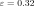
، يؤدي نموذج Deffuant الأصلي إلى عنقود واحد، مع تقارب سريع. ومع نمو ، يتباطأ التقارب أولا، وعندما تبلغ
، يتباطأ التقارب أولا، وعندما تبلغ  عتبة معينة يظهر عنقودان. والحالة التي تكون فيها
عتبة معينة يظهر عنقودان. والحالة التي تكون فيها 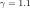
قريبة من الانتقال. وهي مثيرة للاهتمام على نحو خاص، لأننا نستطيع ملاحظة أن عنقودين يتعايشان في البداية لبعض الوقت، لكنهما يندمجان في النهاية في عنقود واحد. وفي حالات محاكاة أخرى بالقيم نفسها للمعلمات، لا يندمج العنقودان أبدا.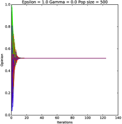
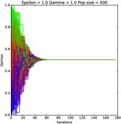
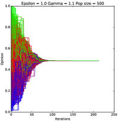
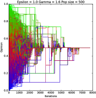
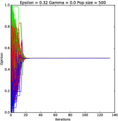
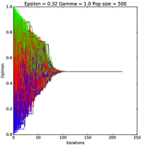
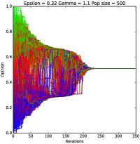
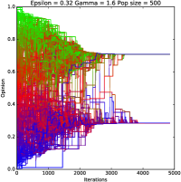
 و
و . يقابل الصف الأول الحالة التي يكون فيها
. يقابل الصف الأول الحالة التي يكون فيها  ، في حين يقابل الصف الثاني
، في حين يقابل الصف الثاني  . وفي كلتا الحالتين
. وفي كلتا الحالتين 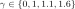
(من اليسار إلى اليمين).ثمة ملاحظة أخرى تظهر من الشكل 2، وهي أنه إضافة إلى النمو السريع العام في زمن التقارب، نلاحظ أيضا قمة أصغر في زمن التقارب من أجل قيمة  بين 0.25 و0.35، وذلك لكل قيم
بين 0.25 و0.35، وذلك لكل قيم  . ويقابل هذا تباطؤا في التقارب حول الانتقال الطوري (من عنقود واحد إلى عنقودين)، وهو ظاهرة فيزيائية معروفة.
. ويقابل هذا تباطؤا في التقارب حول الانتقال الطوري (من عنقود واحد إلى عنقودين)، وهو ظاهرة فيزيائية معروفة.
قد يحتج المرء، مع ذلك، بأن قياس الزمن بوصفه إجمالي عدد التفاعلات قد يضخم الأرقام. ويمكن أن يكون لكل تفاعل 3 نواتج: (1) لا يحدث شيء لأن زوجا من الأفراد ذوي آراء متطابقة (
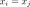
) قد اختير، (2) لا يحدث شيء بسبب الثقة المحدودة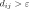
، أو (3) يتغير الرأيان فعلا. وفي ما يلي نسمي النوع الثالث من التفاعل تفاعلات ‘نشطة’.يفصل الشكل 4 العدد الكلي والعدد النشط من التفاعلات لحالة المثال . وينمو كلا المقياسين مثل حيث ، مع فرق صغير ظاهر بين التفاعلات النشطة والتفاعلات الكلية. ويعني هذا النمو بالغ السرعة في زمن التقارب أن التوافق، عمليا، تعوقه حتى درجة ضعيفة من التحيز الخوارزمي، إذ إن التوافق يتشكل ببطء، ومن ثم تبقى الجماعة في حالة غير منتظمة زمنا طويلا.
3.3 آثار الحجم المحدود
 . ولا يعرض المرجع إلا بوصفه عونا بصريا.
. ولا يعرض المرجع إلا بوصفه عونا بصريا.
 و
و ، عندما يكون
، عندما يكون  . حسبت القيم متوسطا على 200 و125 و85 و45 و45 تشغيلات من أجل
. حسبت القيم متوسطا على 200 و125 و85 و45 و45 تشغيلات من أجل  ، على الترتيب. وتعرض أشرطة الخطأ انحرافا معياريا واحدا عن المتوسط.
، على الترتيب. وتعرض أشرطة الخطأ انحرافا معياريا واحدا عن المتوسط.كان الهدف من تحليل ثالث أجريناه فهم ما إذا كان حجم السكان يؤدي دورا في أثر التحيز الخوارزمي. وهذا مهم أيضا للسيناريوهات الواقعية، لأن تشكل الرأي قد يحدث على نطاق صغير أو كبير. ومن ثم ننظر إلى الانتقال بين التوافق والتجزؤ لأحجام سكانية متغيرة، في كل من النموذج الأصلي والنموذج الموسع.
 و
و و
و . حسبت القيم متوسطا على 200 و125 و85 و45 و45 تشغيلات من أجل ، على الترتيب. وتعرض أشرطة الخطأ انحرافا معياريا واحدا عن المتوسط.
. حسبت القيم متوسطا على 200 و125 و85 و45 و45 تشغيلات من أجل ، على الترتيب. وتعرض أشرطة الخطأ انحرافا معياريا واحدا عن المتوسط. في النموذج الأصلي، يتبين أن الانتقال بين  و عناقيد انتقال مستمر، مع مجال لـ
و عناقيد انتقال مستمر، مع مجال لـ يمكن أن تظهر فيه الحالتان كلتاهما في حالات محاكاة مختلفة (انظر الشكل 4 في [17]). وعلى وجه الخصوص، يحدث الانتقال بين عنقود واحد وعنقودين عند . وقد أجرينا محاكاة عددية لاختبار ما إذا كان هذا المجال يتغير مع
يمكن أن تظهر فيه الحالتان كلتاهما في حالات محاكاة مختلفة (انظر الشكل 4 في [17]). وعلى وجه الخصوص، يحدث الانتقال بين عنقود واحد وعنقودين عند . وقد أجرينا محاكاة عددية لاختبار ما إذا كان هذا المجال يتغير مع  ، إذ لا توجد، بحسب علم المؤلفين، دراسة مفصلة في هذا الاتجاه لنموذج الثقة المحدودة.
يعرض الشكل 5 العدد الفعال المتوسط للعناقيد عبر تشغيلات متعددة حصلنا عليها عند
، إذ لا توجد، بحسب علم المؤلفين، دراسة مفصلة في هذا الاتجاه لنموذج الثقة المحدودة.
يعرض الشكل 5 العدد الفعال المتوسط للعناقيد عبر تشغيلات متعددة حصلنا عليها عند  . تمثل أشرطة الخطأ انحرافا معياريا واحدا عن المتوسط. ومن الواضح أنه مع ازدياد
. تمثل أشرطة الخطأ انحرافا معياريا واحدا عن المتوسط. ومن الواضح أنه مع ازدياد  يصبح الانتقال أكثر فجائية، أي إن طول مجال الانتقال يتناقص ويقترب من .
وبالنسبة إلى السكان الصغار جدا على وجه الخصوص، يكون عدد العناقيد في منطقة الانتقال أكبر، ويرجح أن ذلك عائد إلى انخفاض كثافة الآراء في الجماعة الابتدائية، مما يسهل تشكل العناقيد حتى عندما كانت الجماعات الأكبر ستتقارب إلى توافق. ومن ثم يمكننا أن نستنتج أن صغر
يصبح الانتقال أكثر فجائية، أي إن طول مجال الانتقال يتناقص ويقترب من .
وبالنسبة إلى السكان الصغار جدا على وجه الخصوص، يكون عدد العناقيد في منطقة الانتقال أكبر، ويرجح أن ذلك عائد إلى انخفاض كثافة الآراء في الجماعة الابتدائية، مما يسهل تشكل العناقيد حتى عندما كانت الجماعات الأكبر ستتقارب إلى توافق. ومن ثم يمكننا أن نستنتج أن صغر  قد يفضل التجزؤ أيضا. تكاد أشرطة الخطأ تكون غير مرئية خارج مجال الانتقال الطوري، لكنها كبيرة جدا داخل هذا المجال. ويرجع ذلك إلى أنه داخل مجال الانتقال تتقارب بعض المحاكاة إلى عنقود واحد، في حين تتقارب محاكاة أخرى إلى عنقودين، مما يؤدي إلى انحرافات معيارية كبيرة عن المتوسط.
ولتحليل أثر حجم السكان عندما يكون
قد يفضل التجزؤ أيضا. تكاد أشرطة الخطأ تكون غير مرئية خارج مجال الانتقال الطوري، لكنها كبيرة جدا داخل هذا المجال. ويرجع ذلك إلى أنه داخل مجال الانتقال تتقارب بعض المحاكاة إلى عنقود واحد، في حين تتقارب محاكاة أخرى إلى عنقودين، مما يؤدي إلى انحرافات معيارية كبيرة عن المتوسط.
ولتحليل أثر حجم السكان عندما يكون  ، ننظر في قيمتين مختلفتين لـ
، ننظر في قيمتين مختلفتين لـ (0.3 و0.32). وقد اختيرتا لأنهما عند
(0.3 و0.32). وقد اختيرتا لأنهما عند  تؤديان إلى عنقود واحد، في حين يظهر التجزؤ مع نمو
تؤديان إلى عنقود واحد، في حين يظهر التجزؤ مع نمو  . يعرض الشكل 6 العدد الفعال للعناقيد المحصلة لأحجام سكانية مختلفة. ومرة أخرى، يكون الانتقال من عنقود واحد إلى عنقودين أشد انحدارا في
. يعرض الشكل 6 العدد الفعال للعناقيد المحصلة لأحجام سكانية مختلفة. ومرة أخرى، يكون الانتقال من عنقود واحد إلى عنقودين أشد انحدارا في  مع ازدياد
مع ازدياد  ، مع ميل الأحجام السكانية الصغيرة إلى تفضيل التجزؤ. وفي هذه الشروط، يبدو أن التحيز الخوارزمي يمكن أن يكون في الواقع أكثر فعالية في إعاقة التوافق داخل المجموعات الأصغر.
، مع ميل الأحجام السكانية الصغيرة إلى تفضيل التجزؤ. وفي هذه الشروط، يبدو أن التحيز الخوارزمي يمكن أن يكون في الواقع أكثر فعالية في إعاقة التوافق داخل المجموعات الأصغر.
3.4 أثر الشرط الابتدائي
حصلنا على النتائج السابقة في الحالة التي افترضت فيها المحاكاة العددية آراء ابتدائية عشوائية منتظمة في الجماعة السكانية. غير أن تشكل الرأي في الواقع قد يبدأ من شروط ابتدائية مجزأة قليلا. ولمحاكاة ذلك، أدخلنا اصطناعيا فجوة متناظرة حول قيمة الرأي ، لمحاكاة جماعة بدأت الآراء فيها بالتشكل بالفعل. وقد غيرنا عرض الفجوة لفهم أثر مستويات مختلفة من التجزؤ في كل من نموذج الثقة المحدودة الأصلي () وامتدادنا.
يعرض الشكل 7 العدد الفعال المتوسط للعناقيد المحصلة لأحجام فجوة مختلفة، مع أشرطة خطأ تبين انحرافا معياريا واحدا عن المتوسط. وبالنسبة إلى النموذج الأصلي، تزحزح الفجوة الانتقال من عنقودين إلى عنقود واحد نحو قيم أكبر من  . ومن ثم فإن الشرط الابتدائي المجزأ يفضل التجزؤ حتى في مرحلة لاحقة من تطور الآراء. غير أنه مع نمو
. ومن ثم فإن الشرط الابتدائي المجزأ يفضل التجزؤ حتى في مرحلة لاحقة من تطور الآراء. غير أنه مع نمو  يختفي التجزؤ، وبالتالي يمكن لمستوى تحمل أعلى
أن يتغلب على شرط ابتدائي مجزأ. ونلاحظ أيضا أنه مع نمو
يختفي التجزؤ، وبالتالي يمكن لمستوى تحمل أعلى
أن يتغلب على شرط ابتدائي مجزأ. ونلاحظ أيضا أنه مع نمو  ، يتضافر الأثران، أثر التحيز الخوارزمي وأثر التجزؤ الابتدائي، لدفع الانتقال إلى التوافق أقرب فأقرب إلى . وتبين أشرطة الخطأ مرة أخرى كيف تتقارب الجماعة في مجال الانتقال إلى عنقود واحد في بعض المحاكاة وإلى عنقودين في محاكاة أخرى، مما يؤدي إلى انحرافات كبيرة نسبيا عن المتوسط. أما خارج مجال الانتقال فتكاد أشرطة الخطأ تكون غير مرئية، ومن ثم يكون عدد العناقيد مستقرا جدا من محاكاة إلى أخرى.
، يتضافر الأثران، أثر التحيز الخوارزمي وأثر التجزؤ الابتدائي، لدفع الانتقال إلى التوافق أقرب فأقرب إلى . وتبين أشرطة الخطأ مرة أخرى كيف تتقارب الجماعة في مجال الانتقال إلى عنقود واحد في بعض المحاكاة وإلى عنقودين في محاكاة أخرى، مما يؤدي إلى انحرافات كبيرة نسبيا عن المتوسط. أما خارج مجال الانتقال فتكاد أشرطة الخطأ تكون غير مرئية، ومن ثم يكون عدد العناقيد مستقرا جدا من محاكاة إلى أخرى.
أما من حيث زمن التقارب، فيرسم الشكل 8 عدد التفاعلات النشطة في حالة شرط ابتدائي مجزأ. ويبدو أن التجزؤ الابتدائي يسرع التقارب عندما تكون الجماعة النهائية مجزأة أيضا. غير أنه عندما تبلغ الجماعة النهائية توافقا (عنقودا واحدا)، ينعكس الأثر، أي إن التجزؤ الابتدائي يبطئ التقارب. ويستمر زمن التقارب في النمو بسرعة كبيرة جدا مع  ، كما رأينا سابقا في حالة شرط ابتدائي منتظم.
، كما رأينا سابقا في حالة شرط ابتدائي منتظم.
ومن ثم، مرة أخرى، يبدو أن الأثرين يعملان معا ضد بلوغ التوافق، إما بتفضيل ظهور عناقيد إضافية أو بإبطاء التوافق عندما يكون من الممكن، من حيث المبدأ، أن يظهر.
4 المناقشة والاستنتاجات
قدمنا نموذجا للتحيز الخوارزمي ضمن إطار الثقة المحدودة، وحللنا سلوكه. والتحيز الخوارزمي آلية تشجع التفاعل بين الأفراد المتشابهين في التفكير، على نحو يشبه الأنماط المرصودة في بيانات الشبكات الاجتماعية الحقيقية. ووجدنا أن التحيز الخوارزمي في هذا النموذج يعيق التوافق ويفضل تجزؤ الآراء عبر آليتين مختلفتين. فمن جهة، يعاق التوافق بسبب تباطؤ شديد جدا في التقارب، بحيث إنه حتى عندما يحصل، تقاربيا، على عنقود واحد، يكون الزمن اللازم للوصول إليه طويلا إلى درجة أن التوافق لن يظهر عمليا. وبالإضافة إلى ذلك، لاحظنا تجزؤ الجماعة مع ازدياد قوة التحيز، إذ يزداد عدد العناقيد المحصلة مقارنة بالنموذج الأصلي. كما يعزز الشرط الابتدائي المجزأ التجزؤ، مضخما أثر التحيز الخوارزمي. وبالإضافة إلى ذلك، لاحظنا أن الجماعات الصغيرة قد تكون أقل قدرة على مقاومة التجزؤ، بسبب آثار الحجم المحدود.
تستند النتائج المعروضة هنا إلى افتراض وجود الثقة المحدودة، أي إن الأفراد ذوي الآراء المتباينة جدا لا يتبادلون المعلومات ومن ثم لا يؤثر بعضهم في بعض. غير أن استنتاجاتنا المتعلقة بأن التحيز الخوارزمي يعيق التوافق تظل قائمة حتى عند إزالة الثقة المحدودة (أي ). ففي هذه الحالة، يظل التوافق يصبح بطيئا للغاية مع ازدياد التحيز، ومن ثم لا يتحقق عمليا أبدا، وهي نتيجة نعتقد أنها ستنطبق على أي نموذج آخر من نماذج ديناميات الرأي. وسيكون من المثير للاهتمام أيضا معرفة كيف يمكن لأخذ بنية شبكة اجتماعية أكثر واقعية بين الأفراد في الحسبان، بدلا من رسم كامل يمكن فيه لأي شخص أن يتفاعل مع أي شخص آخر، أن يؤثر في عملية تشكل الرأي، وربما يفاقم الآثار المرصودة في هذه الدراسة.
على الرغم من وجود أدلة على أن أنواعا كثيرة من التفاعلات الاجتماعية تخضع للتحيز الخوارزمي، لا يزال الجدل مستمرا بشأن ما إذا كان ذلك يولد تجزؤا في الآراء على المدى الطويل أم لا. وتدعم نتائجنا العددية الخيار الأول، الذي نخطط لتحليله بمزيد من التفصيل مستقبلا من خلال تطبيق نموذجنا على بيانات حقيقية من عمليات الشبكات الاجتماعية. ونود أيضا أن نفهم كيف يمكن للمعلومات الخارجية أن تؤثر في السلوك المرصود، ولا سيما عندما تختار مصادر المعلومات أيضا بناء على تحيز مشابه. وقد ظهر أيضا عمل حديث حول كيفية مواجهة استقطاب الآراء على الشبكات الاجتماعية [23]، وتشير النتائج الأولية إلى أن تيسير التفاعل بين أفراد مختارين في مجتمعات مستقطبة يمكن أن يخفف المشكلة. وسنبحث ذلك أيضا باستخدام نموذجنا.
الشكر والتقدير
نشكر مركز تقنية المعلومات في جامعة بيزا (Centro Interdipartimentale di Servizi e Ricerca) على إتاحة الوصول إلى موارد الحوسبة اللازمة للمحاكاة. وقد دعم هذا العمل برنامج H2020 التابع للجماعة الأوروبية ضمن مخطط التمويل “FETPROACT-1-2014: علم النظم العالمية (GSS)”، اتفاقية المنحة # 641191 CIMPLEX “جمع المواطنين والنماذج والبيانات معا في مختبرات استكشافية اجتماعية تشاركية وتفاعلية”.
References
- [1] Pew Research Center: Political Polarization in the American Public, June 12, 2014, http://www.people-press.org/2014/06/12/political-polarization-in-the-american-public/
- [2] Quartz Media: European politics is more polarized than ever, and these numbers prove it, March 30, 2016, https://qz.com/645649/european-politics-is-more-polarized-than-ever-and-these-numbers-prove-it/
- [3] J. Campbell: Polrized: Making Sense of a Divided America (Princeton UP, 2016)
- [4] M. Prior: Post-Broadcast Democracy: How Media Choice Increases Inequality in Political Involvement and Polarizes Elections (Cambridge UP, 2007)
- [5] M.A. Baum and T. Groeling: New Media and the Polarization of American Political Discourse, Political Communication, 25, 345-365 (2008)
- [6] J.A. Graber and T. Dunaway: Mass Media and American Politics (9th edition, Sage, 2012)
- [7] S. Messing, S. J. Westwood: Selective Exposure in the Age of Social Media: Endorsements Trump Partisan Source Affiliation, When Selecting News OnlineCommunic. Res. 41, 1042-1063 (2012)
- [8] A. Charles: Media and/or Democracy, in: Media/Democracy: A Comparative Study, ed: A. Charles (Cambridge Scholars, 2012)
- [9] M. Ignatieff: Media Pluralism and Democracy, Annual Colloquium on Fundamental Rights, Brussels, November 17, 2016, http://ec.europa.eu/information\_society/newsroom/image/document/2016-47/media\_pluralism\_and\_democracy\_speech\_en\_19783.pdf
- [10] K. Purcell, L. Rainie, A. Mitchell, T. Rosenstiel and L. Olmstead: Understanding the Participatory News Consumer, Pew Internet and American Life 375 Project, 1 March, http://www.pewinternet.org/Reports/2010/Online-News.aspx
- [11] A. Hermida, F. Fletcher, D. Korell, and D. Logan: Share, like, recommend: Decoding the social media news consumer, Journalism Studies, 0, 1-10 (2012)
- [12] M. Villi, J. Matikainen and I. Khaldarova: Recommend, Tweet, Share: User-Distributed Content (UDC) and the Convergence of News Media and Social Networks. In: Media Convergence Handbook Vol. 1. Journalism, Broadcasting, and Social Media Aspects of Convergence, edited by Artur Lugmayr and Cinzia Dal Zotto, pp289-306 (Springer, Heidelberg, 2015)
- [13] E. Pariser: The filter bubble: What the internet is hiding from you (Penguin, London, 2011)
- [14] E. Bakshy, S. Messing, L.A. Adamic: Exposure to ideologically diverse news and opinion on Facebook, Science, 348, 6239 (2015)
- [15] E. Colleoni, A. Rozza, A. Arvidsson: Echo Chamber or Public Sphere? PredictingPolitical Orientation and Measuring PoliticalHomophily in Twitter Using Big Data, Journal of Communication 64, 317-332 (2014)
- [16] R. Pastor-Satorras, C. Castellano, P. Van Mieghem, and A. Vespignani: Epidemic processes in complex networks, Rev. Mod. Phys. 87, 925 (2015)
- [17] G Deffuant, D Neau, F Amblard, G Weisbuch: Mixing beliefs among interacting agents, Advances in Complex Systems 3, 87-98 (2000)
- [18] J. Lorenz. Continuous opinion dynamics under bounded confidence: A survey. International Journal of Modern Physics C, 18(12):1819–1838, 2007.
- [19] Sîrbu, A., Loreto, V., Servedio, V. D., and Tria, F, . Opinion dynamics: models, extensions and external effects. In Participatory Sensing, Opinions and Collective Awareness (pp. 363-401), 2017. Springer International Publishing.
- [20] Del Vicario, M., Bessi, A., Zollo, F., Petroni, F., Scala, A., Caldarelli, G., Stanley, H.E. and Quattrociocchi, W., 2016. The spreading of misinformation online. Proceedings of the National Academy of Sciences, 113(3), pp.554-559.
- [21] Clio Andris, David Lee, Marcus J. Hamilton, Mauro Martino, Christian E. Gunning, John Armistead Selden. The Rise of Partisanship and Super-Cooperators in the U.S. House of Representatives. PlosONE Published: April 21, 2015 https://doi.org/10.1371/journal.pone.0123507
- [22] Michela Del Vicario, Sabrina Gaito, Walter Quattrociocchi, Matteo Zignani and Fabiana Zollo. News Consumption during the Italian Referendum: A Cross-platform Analysis on Facebook and Twitter. Proc. DSAA2017 - The 4th IEEE International Conference on Data Science and Advanced Analytics (2017).
- [23] Garimella, K., De Francisci Morales, G., Gionis, A. and Mathioudakis, M., 2017, February. Reducing controversy by connecting opposing views. In Proceedings of the Tenth ACM International Conference on Web Search and Data Mining (pp. 81-90). ACM.
- [24] Garimella, K., Morales, G.D.F., Gionis, A. and Mathioudakis, M., 2018. Political Discourse on Social Media: Echo Chambers, Gatekeepers, and the Price of Bipartisanship. WWW 2018, arXiv preprint arXiv:1801.01665.